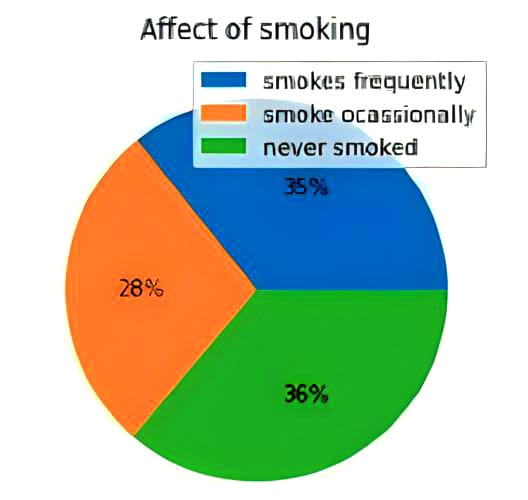

Our Project Stroke is based on heart stroke prediction since according to the World Health Organization (WHO) stroke is the 2nd leading cause of death globally, responsible for approximately 11% of total deaths. This project is based on the concept to predict whether a patient is likely to get stroke based on the input parameters like gender, age, various diseases, and smoking status. This website will give you a detailed explanation regarding heart stroke, what all symptoms you will get, how it is caused and the prevention steps that you can take to stay healthy or if it is too serious then what all treatments are recommended for it. As we all know to live a healthy life you should know your risk and what all healthy lifestyle you can follow to stay fit. Our website and project can help you to build a powerful prevention plan with your health care team (doctors, nurses, pharmacists, registered dietitians, and other professionals).
About our project
Analysis of our dataset
The data contains 5110 observations with 12 attributes. This dataset is used to predict whether a patient is likely to get stroke based on the input parameters like gender, age, various diseases, and smoking status. Each row in the data provides relavant information about the patient.
Attribute Information
- id: unique identifier
- gender: "Male", "Female" or "Other"
- age: age of the patient
- hypertension: 0 if the patient doesn't have hypertension, 1 if the patient has hypertension
- heart_disease: 0 if the patient doesn't have any heart diseases, 1 if the patient has a heart disease
- ever_married: "No" or "Yes"
- work_type: "children", "Govt_jov", "Never_worked", "Private" or "Self-employed"
- Residence_type: "Rural" or "Urban"
- avg_glucose_level: average glucose level in blood
- bmi: body mass index
- smoking_status: "formerly smoked", "never smoked", "smokes" or "Unknown"*
- stroke: 1 if the patient had a stroke or 0 if not *Note: "Unknown" in smoking_status means that the information is unavailable for this patient
Platform Used
We have analysised and predicted our dataset on anaconda software which is an open-source distribution for python and R. It is used for data science, machine learning, deep learning, etc. With the availability of more than 300 libraries for data science, it becomes fairly optimal for any programmer to work on anaconda for data science.The Anaconda distribution comes with packages that can be used on Windows, Linux, and MacOS. The individual edition includes popular package names like numpy , pandas , scipy , sklearn , tensorflow , pytorch , matplotlib and more.
In anaconda we have basically used Jupyter notebook application for our back end to predict the chances of stroke for a person. The Jupyter Notebook application allows you to create and edit documents that display the input and output of a Python or R language script. Once saved, you can share these files with others.
Algorithm Implemented
we have used many algorithms for our prediction like SVM, Linear reggression, Naive baye's, Decision tree, Random forest, KNN...etc to predict and analysis our data. By far there are 2 algorithms which provides the best accuracy for our dataset, they are as folllows:
- Neccesary libraries Imported:- numpy, pandas, matplotlib.pyplot
- Dependent attribute: stroke
- Independent attribute: gender, age, hypertension, heart_disease, ever_married, work_type, Residence_type, avg_glucose_level, bmi, smoking_status
- Test size: 0.1
- Desicion Tree
- Random Forest
Decision Tree is a Supervised learning technique that can be used for both classification and Regression problems, but mostly it is preferred for solving Classification problems. It is a tree-structured classifier, where internal nodes represent the features of a dataset, branches represent the decision rules and each leaf node represents the outcome.In a decision tree, for predicting the class of the given dataset, the algorithm starts from the root node of the tree. This algorithm compares the values of root attribute with the record (real dataset) attribute and, based on the comparison, follows the branch and jumps to the next node.For the next node, the algorithm again compares the attribute value with the other sub-nodes and move further. It continues the process until it reaches the leaf node of the tree. The criteria we have used here is entropy.
Accuracy Score: 0.9706457925636007 (97%)
Random Forest is a popular machine learning algorithm that belongs to the supervised learning technique. It can be used for both Classification and Regression problems in ML. It is based on the concept of ensemble learning, which is a process of combining multiple classifiers to solve a complex problem and to improve the performance of the model. Random Forest is a classifier that contains a number of decision trees on various subsets of the given dataset and takes the average to improve the predictive accuracy of that dataset. " Instead of relying on one decision tree, the random forest takes the prediction from each tree and based on the majority votes of predictions, and it predicts the final output. Random Forest works in two-phase first is to create the random forest by combining N decision tree, and second is to make predictions for each tree created in the first phase. The criteria we have used here is entropy, random_state is 22, n_estimators=3
Accuracy Score: 0.9706457925636007 (97%)
Outcome of our project
So the total outcome of our analysis and prediction is to predict whether a patient is likely to get a stroke based on the input parameters like gender, age, various diseases, and smoking status. In our result we have clearly explained the role of each parameter on the stroke in our website and here through our analysis we have explained our result through graphs.
Graph of each parameter with number of strokes
- x axis represents the number of stroke and y axis represents each parameter
- Here the blue colour represents the people with stroke and orange colour represents the people without stroke in their respective parameter
- As we can see in this graph, people who are unmarried are more likely to experience less number of heart strokes as compared to the people who are married many factors can be there to predict this type of result like stress, depression etc
- People who are living in rural area are more likely to experience less number of heart strokes as compared to the people living in urban areas many factors can be there to predict this type of result like pollution, unhygienicness etc
- Males are more likely to experience less number of heart strokes as compared to the females many factors can be there to predict this type of result like pregnancy, high blood pressure etc

pie chart for hypertension
This pie chart represent people having heart stroke out of which 26% of people have hypertension are more likely to suffer heart stroke than the remaining 73% of people without hypertension, here other parameters may play the role to predict this type of result.

pie chart for smoking
This pie chart represent people having heart stroke with their smoking activity out of which 28% of people smoke ocassionally, 35% of people smoke frequently and the remaining 36% of people never smoked, here other parameters may paly the role to predict this type of result.